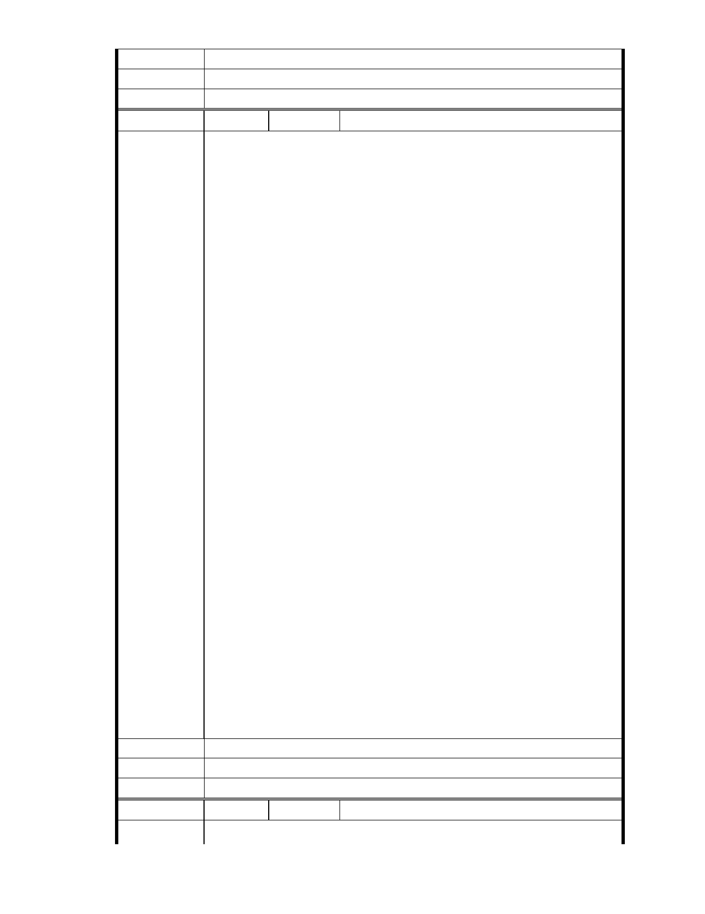

建議辦法
市 府 說 明 相關陳情意見將納入本案審查人民意見，依法定程序辦理。
委 員 會 決 議 同編號 1。
編
號 267
陳情人 MA201303180054
就是公務員心態嗎
慈濟內湖開發案 將擇日再審查
北市府都發局都市計畫委員會昨天審理慈濟開發案，不過地方環保團體
及綠黨昨天至市府門口抗議，呼籲駁回開發案。（記者郭安家攝）
〔記者郭安家／台北報導〕台北市都市計畫委員會昨天召開第八次專案
小組審查會，討論慈濟內湖開發案，雖然慈濟提出新的細部計畫，建築
容積率降低、滯洪沉砂池規劃容量增加，但此案涉及往後諸多保護區變
更案，為求謹慎，都委會仍決議擇日再開審查會，並委託專業技師評估
新方案。
內湖保護區守護聯盟仍堅持，慈濟變更案所提法令依據為《都市計畫法》
第廿七條第一項第三款「為適應國防或經濟發展之需要」，而慈濟案非緊
陳情理由
急、亦非國防、更不是經濟發展，因此變更不符規定。
但北市都發局主任秘書劉惠雯表示，慈濟過去在當地經營管理時，沒有
再破壞環境，市府肯定其努力，故同意慈濟以都計法變更。
內湖保護區守護聯盟及綠黨約十位民眾，事先在市府大樓舉辦記者會，
並高舉抗議布條（見圖，記者郭安家攝）。不過，擁護慈濟案的內湖民眾
也號召上百人至都委會發聲，期盼慈濟能為地方帶來發展；朱先生說，
大湖山莊街受水患所苦，相信慈濟開發案對內湖環境改善有助益。
環保團體憂慮慈濟開發案會加劇環境危害，對此慈濟已提出新細部計
畫，將建築容積率從原先的一六○％改為一二○％，滯洪沉砂池規劃容
量則從二五六二．五立方公尺增為二八二二．五立方公尺；此外，基地
毗鄰的山坡地應避免大規模開挖，部分坡地則要施作人工擋土牆。
建議辦法
市 府 說 明 相關陳情意見將納入本案審查人民意見，依法定程序辦理。
委 員 會 決 議 同編號 1。
編
號 268
陳情人 MA201303180472
陳 情 理 由 中華民國總統府-Office of the President, Republic of China (Taiwan)
- 310 -